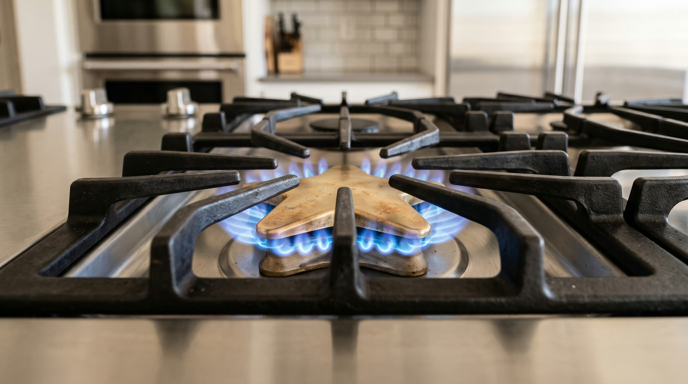

Thermador cooking
Endless sparking, no flame, or clicking that continues with the flame lit. All three have known causes.

The click you hear is the spark system trying to light gas that is not arriving, or firing long after its job is done. On Thermador cooktops and rangetops the usual chain involves moisture from cleaning or a boil over sitting in the spark switches, a fouled or cracked igniter electrode at the burner, a spark module aging out, or a Star Burner cap sitting a few degrees off its seat.
Because one module typically serves several burners, one wet switch can set the entire top clicking, which sounds worse than it is. We dry and test the circuit, replace the component that actually failed, reseat and gap every burner, and confirm each one lights on the first spark before packing up.
Cleaning day and boil overs push water where the spark lives. Some evaporates harmlessly. The rest corrodes switches and keeps the top clicking for weeks.
A film of grease or a hairline fracture bleeds the spark away before it reaches gas. The burner clicks forever and never catches.
Weak spark, lazy spark, or spark that will not stop after ignition. The module has one job and it is measurably failing at it.
The points of the cap have to sit exactly home. A little off and the gas path misses the spark gap entirely.
Very common. Let the area dry for a day, run a neighboring burner low to help it along, and if the sound outlives the weekend the moisture found something to damage. Then call us.
The sound is not. Failed ignition attempts do release small amounts of unburned gas, so a stove that smells like gas gets shut off and aired out before anything else happens.
Yes. Star Burner gas tops, rangetops, professional ranges, and induction surfaces, current platforms and the generations before them.
One phone call and the problem becomes ours. Open daily, 7am to 7pm.
First callers get first pick of the same day windows. The $89 diagnostic credits toward the repair, so the answer itself ends up costing nothing.